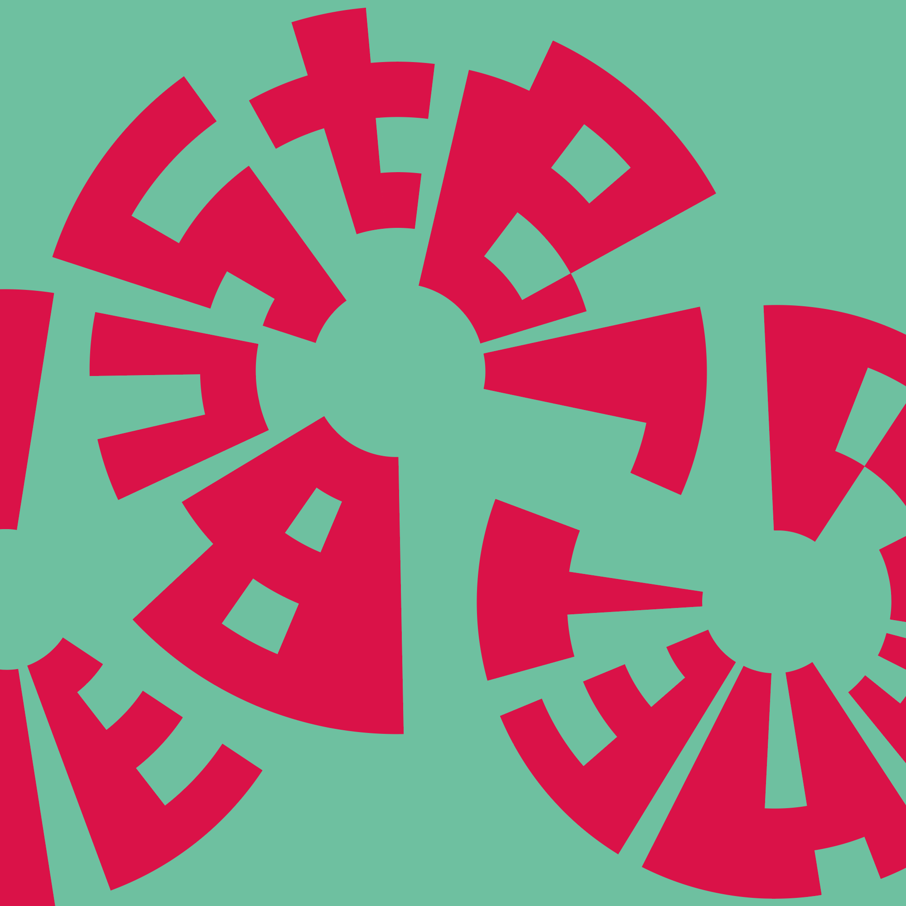

Zyrkles
2022 • custom typeface
Request a license →
Zyrkles is the deranged brainchild of Alexander Brancyzk and not intended for any normal use. Drive yourself bonkers trying to layout this single-style typeface! Perfect for your custom LP labels, illegible (but unique!) protest signs or outlandish editorial design. Get in touch if you need to help figuring out how to use it – we do too.
